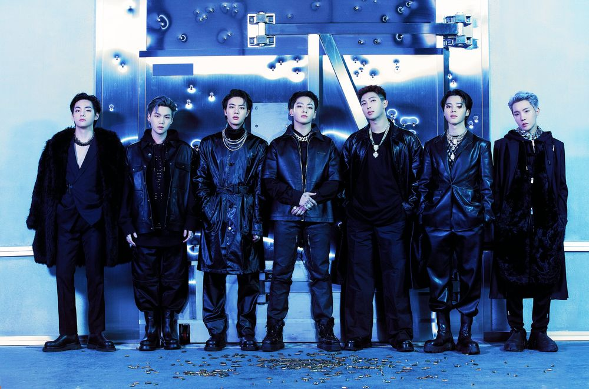
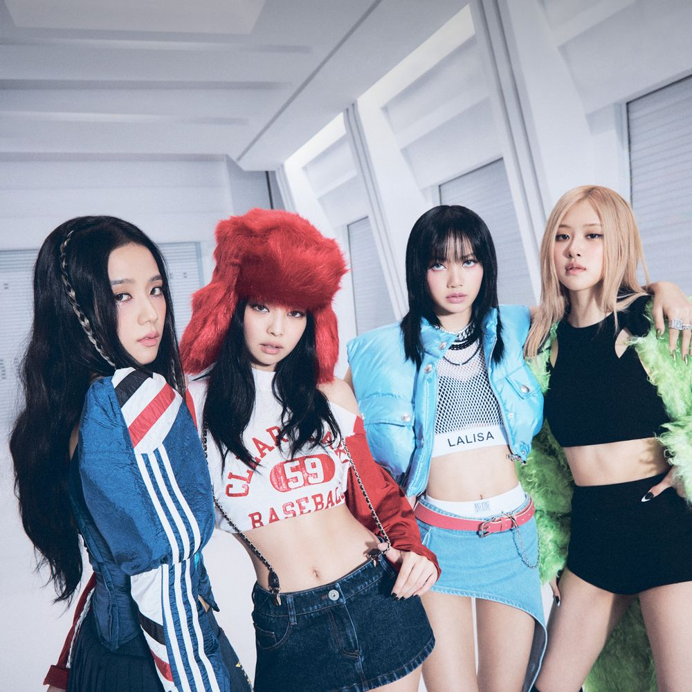

2013년 데뷔해 국내외 신인상을 휩쓴 방탄소년단은 명실상부 한국을 대표하는 최정상 보이 그룹으로 성장했다. 전 세계적으로 방탄소년단 열풍을 일으키며 ‘21세기 팝 아이콘’으로 불린다. 미국 빌보드, 영국 오피셜 차트, 일본 오리콘을 비롯해 아이튠즈, 스포티파이, 애플뮤직 등 세계 유수의 차트 정상에 올랐고, 음반 판매량과 뮤직비디오 조회수, SNS 지수 등에서도 독보적인 기록을 써 내려가고 있다. 특히, 방탄소년단은 한 주에 빌보드 ‘핫 100’ 차트와 ‘빌보드 200’ 차트 정상을 동시 정복한 최초의 그룹이며, 통산 ‘빌보드 200’ 6차례, ‘핫 100’ 6차례 1위를 차지했다. 또한, ‘제63회 그래미 어워드’에서 한국 가수 최초로 단독 무대를 펼쳐 ‘빌보드 뮤직 어워드’와 ‘아메리칸 뮤직 어워드’, ‘그래미 어워드’까지 미국 3대 음악 시상식 무대에서 공연하는 기록을 세웠다. 방탄소년단은 스타디움 투어를 개최하며 전 세계 콘서트 시장에서도 글로벌 아티스트로서의 입지를 다져 왔으며, UN 연설과 LOVE MYSELF 캠페인 등을 통해 선한 영향력을 실천하고 있다.
K-POP 3세대 대표 아이돌 그룹 중 하나로서, 해외와 빌보드 메인 차트에서 많은 기록을 세우고 있는 세계적인 걸그룹이다. 데뷔와 동시에 《휘파람》과 《붐바야》를 히트시켰으며, 이후 《불장난》, 《마지막처럼》, 《How you like that》,《뚜두뚜두》, 《Pink Venom》 등의 곡들을 연달아 히트시켰다. 현재 걸그룹 중 유일하게 모든 멤버가 글로벌 브랜드의 ‘글로벌 앰버서더’로도 활동하고 있다. 지난 8월 선공개 싱글 'Pink Venom'으로 돌아온 블랙핑크의 두 번째 정규 앨범 [BORN PINK]가 발매되었다. 신곡 발매와 동시에 최고, 최초, 최단의 기록을 쏟아 내며 여왕의 귀환을 선포한 블랙핑크는 정규 앨범 타이틀 곡 'Shut Down'을 통해 또 한 번 전 세계 리스너들을 사로잡을 예정이다. 정규 앨범 발매에 이어 연달아 이어지는 월드 투어를 통해 써 내려갈 블랙 핑크의 새로운 역사가 주목되는 시점이다.
